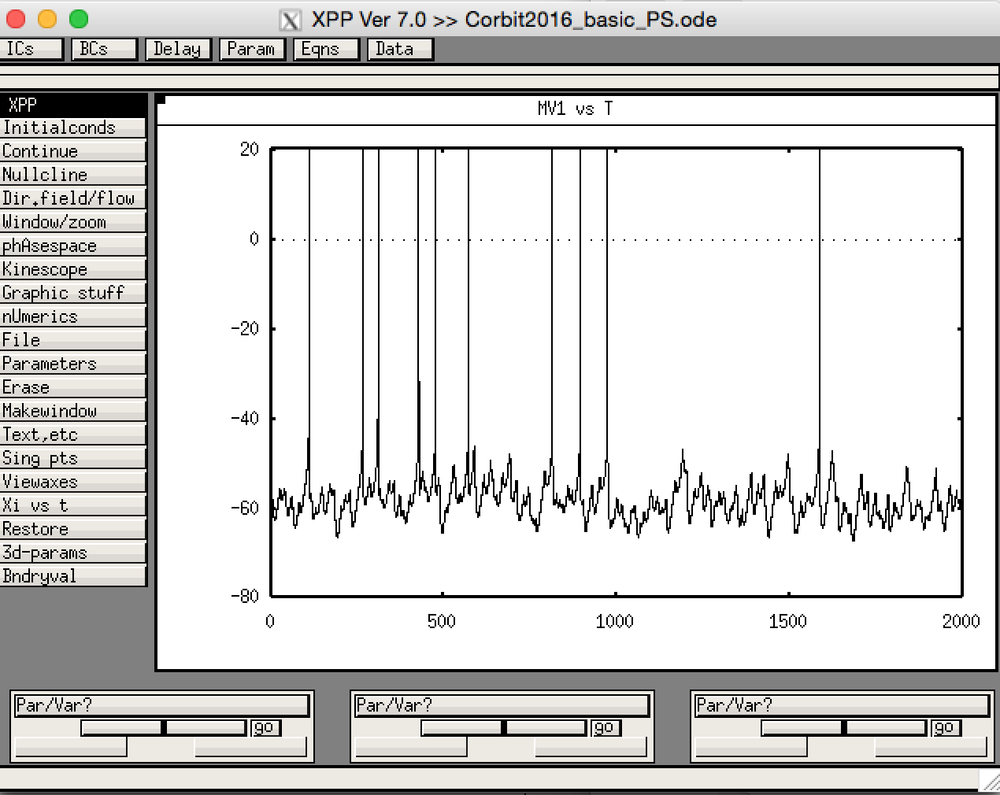

This is the readme for the XPP model associated with the paper: Corbit VL, Whalen TC, Zitelli KT, Crilly SY, Rubin JE, Gittis AH (2016) Pallidostriatal Projections Promote ß Oscillations in a Dopamine-Depleted Biophysical Network Model. J Neurosci 36:5556-71 This model was contributed by Jon Rubin. Sample run in its default settings: start xpp with the ode file, for example on a mac os x unix installation type: xppaut Corbit2016_basic_PS.ode then from the gui select InitalConds -> Go which produces this graph:  For the file to run, the included txt files must be in the same directory. These specify the connectivity pattern among the model neurons. Please see the comments at the top of the ode file for instructions on how to run in control and dopamine-depleted (DD) cases and for instructions on how to simulate this model in silent mode, which will save output (time points and voltages of all model neurons at those time points) in a data file as it is generated.